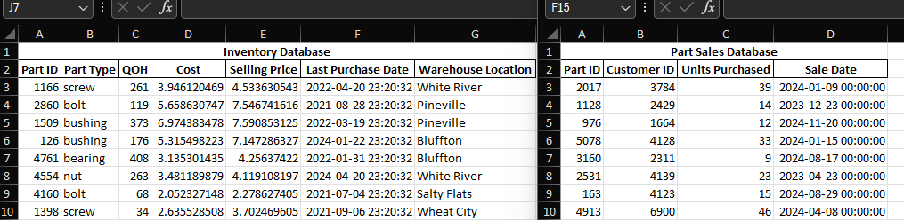
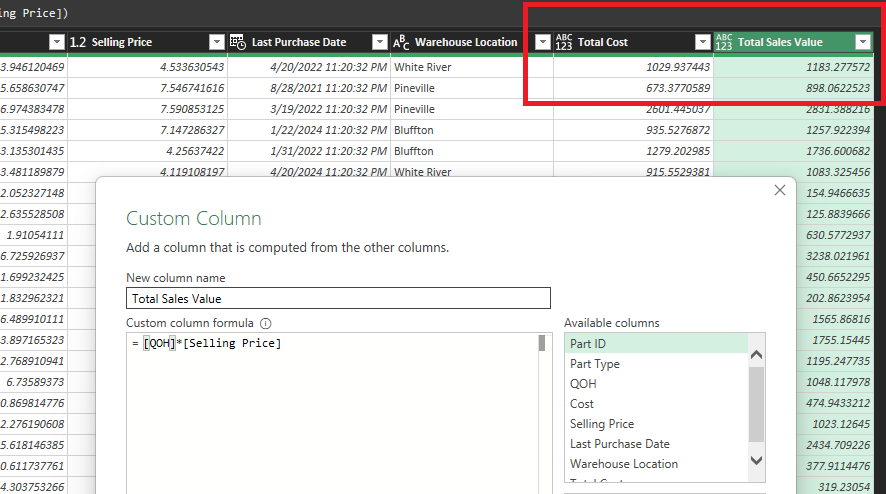
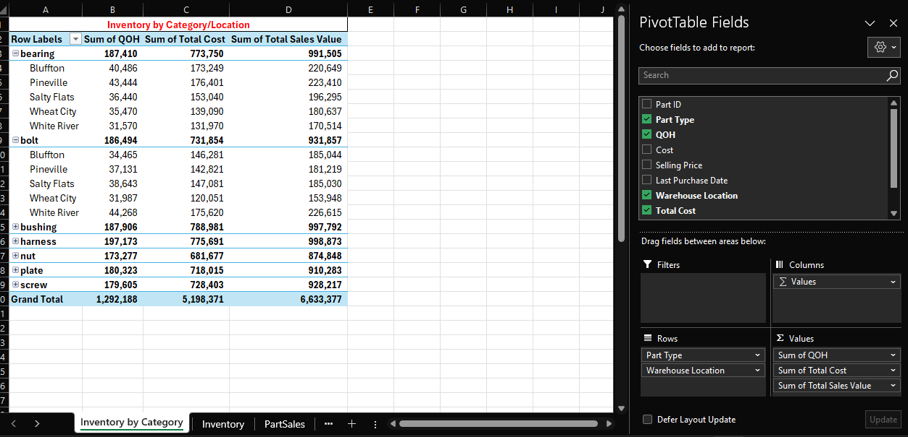

Inventory Analysis with Excel Power Query and Tableau
Let's assume a component distributor wants to obtain key metrics regarding their inventory balances. The distributor sells various nuts, bolts, screws, bearings, bushings, plates, mounts and harnesses. None of the inventory is consumed in WIP, the distributor simply buys and sells finished goods.
Data will need to be pulled from multiple files - one containing inventory data and one containing detailed part sales data. Our task is to group the inventory data by category, calculate key inventory ratios/metrics, determine if there is aged inventory subject to recording an allowance, pinpoint which warehouses have the slowest moving inventory, and display this information in Tableau.
-
Step 0: Obtain data for Power Query
Two excel files containing inventory and sales data were obtained (inventory_database.xlxs and parts_sales_detail.xlxs). The files were pre-cleaned and contain complete/accurate data. The files:
Total cost and sales value attributable to each part ID were added as columns using the Power Query Editor:
 -
Step 1: Group inventory by category
A simple pivot table on the queried data shows us the inventory by category, as well as location:
 -
Step 2: Calculate key inventory ratios and metrics
We will find key ratios and metrics to calculate based on our tables. For starters, we will find - inventory turnover, days sales in inventory, sale-through rate and the stock to sales ratio. Along the way, we will try to identify other metrics that might be beneficial to our analysis and business decision making.
Here is a summary of our basic ratio calculations:
- Inventory turnover = COGS / average inventory
- Days sales in inventory = (average inventory / COGS) X number of days
- Sale-through rate = (total sales / inventory on hand) X 100
- Stock to sales ratio = average inventory / net sales value